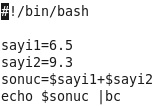

Kabuk Programlama (Bash) - 2
Dizimizin 2. yazısı ile bu sayımızda da kabuk programlama konumuza devam ediyoruz.

Kısaca geçen sayımızda nelere değindik, hatırlayalım isterseniz. Kabuğun işletim sistemindeki yerine, önemine teknik olarak değindikten sonra hatırlarsınız ilk uygulamamız, ekrana “Merhaba Dünya” yazan bir çalışma olmuştu. Daha sonra değişken kullanarak ve kullanıcıya çalışma esnasında (runtime) sorarak değişken değeri elde edip bunu ekrana bastırarak 2. ve 3. çalışmamızı yaptık. Bunları yaparken ayrıca script dosyalarını nasıl oluşturacağımızı ve nasıl çalıştıracağımızı da öğrendik.
Bu çalışmamızda da parametre kullanımına ve aritmetik işlemlere değinelim.
Kabuk programlama yaparken kullandığımız komutlar, dışarıdan yazılan ve çalıştırılan komutlardır. Aslında kullanıcının yazdığı tüm komutlar dışarıdan yazılmaktadır diyebiliriz. Bu da komutun parametre alabileceğini gösterir. Parametre kullanımının tarifini şu şekilde yapabiliriz: Önceden belirlenmiş veya çalışma esnasında belli olan bir değişkeni alıp daha sonraki işleme, bu değişken değerini atayarak komutu çalıştırmaktır.
Örnek verecek olursak gireceğimiz kullanıcı adının sistemde varlığını kontrol eden bir script dosya yazalım. Bunu yapmak için neler yapmalıyız?
İlk önce kullanıcıdan aranacak kullanıcı adını almamız lazım. İşte uygulamamızın parametresi bu olacak. Sonra aldığımız bu kullanıcı adını nerede sorgulayacağımızı bilip onu bir değişkende kullanıp sonucu bildireceğiz.
Önceki sayımızda yaptığımız Giriş/Çıkış işlemlerini bir hatırlayalım. Kullanıcıdan bir mesaj girmesini isteyerek bunu mesaj isimli değişkene atıyorduk. Şimdi yine aynı şekilde yaparak kullanıcı adını alalım.
#!/bin/bash
Echo “Lütfen kullanıcı adını giriniz.”
Read kullanıcıadı
Gördüğünüz gibi kullanıcıadı isimli değişkeni read ile aldık. Artık kullanabiliriz. Tabii ki başka yöntemleri olmasıyla birlikte bizim kullanacağımız yöntem id komutu olacak. Yani şöyle ki id kullanıcıadı dediğimizde yeni satırda kullanıcının ID ve grup bilgilerini alabiliyorsak o kullanıcı sistemde tanımlıdır diyebiliriz. Önce olmayan bir kullanıcı için id komutunu script olmadan kullanalım.

İlk kullanışımızda olmayan bir kullanıcıyı denedik ve “No such user” mesajını alarak böyle bir kullanıcı olmadığını öğrendik.

İkinci resmimizde ise var olan bir kullanıcıyı sorguladık ve id, grup adlarından oluşan kısa bilgiyi aldık.
Şimdi aynı şekilde script dosyamızda bunu kullanarak uygulamamızı yazalım.

Touch ile parametre1 isimli bir dosya oluşturup nano ile dosya içine giriyoruz.

Burada da gördüğünüz gibi kullanıcı adını istedik. Read ile tuttuk ve id komutuna parametre yaptık.
Şimdi uygulamayı çalıştıralım. (Script dosyasına chmod +x dosyadı ile çalıştırma hakkı vermeyi unutmayalım.)

Sonuç olarak bizden kullanıcı adını isteyen ve girdiğimiz kullanıcı adını id komutuna parametre vererek sonuç dönen bir uygulamamız oldu. Tabii sizler de parametre kullanımına başka örnekler yapabilir, bizimle paylaşabilirsiniz.
Bu başlığımızda da matematiksel işlemleri nasıl yapacağımıza değineceğiz.
Bash programlamada, matematiksel işlemler için alternatif operatörler kullanmamız gerekmekte. Bu operatörlerle elde edilecek sonucu (tamsayı, kesirli ifade) belirtmiş oluyoruz.
Örnek verecek olursak; typeset –i sonuc ile sonuç isminde tamsayı (integer) bir değişken tanımlarız. Ardından hesaplama kısmında da belirteceğimiz operatörlerle de tamsayı sonuç veya kesirli sonuç elde edeceğiz. Örneğin kesirli sonuç elde etmek için bc operatörünü kullanırız. bc operatörü olmadan kesirli sonuç elde edemeyiz.
Şimdi bir örnekle devam edelim.

Örneğimizde göreceğiniz gibi typeset –i sonuç ile tamsayı (integer) bir değişken tanımladık. Sayi1 ve sayi2 isminde iki adet daha değişkenimiz var. Bu değişkeni toplayıp sonuç değişkenine atıyoruz. Daha sonra sonucu echo $sonuc ile ekrana basıyoruz.

Bu örneğimizde gördüğünüz üzere sabit değişkenlerle çalıştık. Amacımız sadece örneğimizi işlemekti. Oysa şimdiye dek öğrendiklerimizle son örneğimizi dinamik bir yapıya kavuşturabiliriz. Bunu siz deneyebilirsiniz.
Bir de kesirli ifade edilen sayılar için bir örnek yapalım. Bunun için yukarıda bahsettiğimiz bc operatörünü kullanacağız.

Yukarıdaki örneğimizde diğerinden farklı olarak typeset –i tanımını kaldırdık ve ekrana basarken bc operatörünü kullandık. Buna göre sayi1 ve sayi kesirli sonuca göre toplama işlemine tabii tutuldu. Sonuç da aşağıda gördüğünüz gibi oldu

Operatörleri ve işlemleri daha iyi anlayabilmek adına son örneğimizden bc operatörünü kaldırarak sonucu gözlemleyebilirsiniz.
Önümüzdeki sayıda tüm konuları gözden geçirmek adına son örneğimizi dinamik olarak kurgulayıp diğer konulara değinmek üzere hoşça kalın.